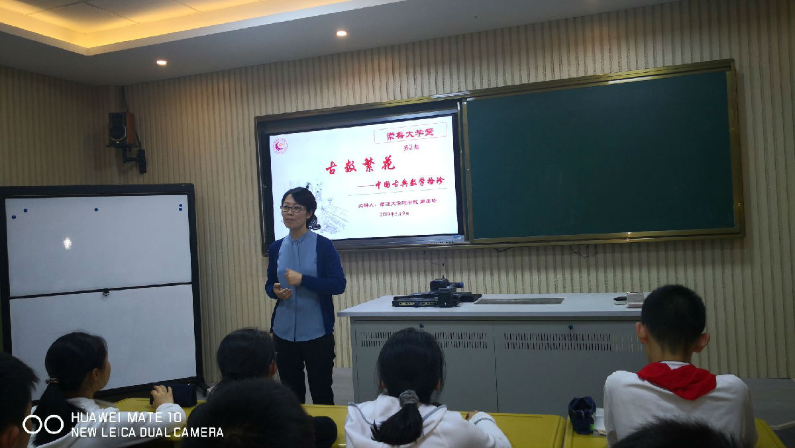
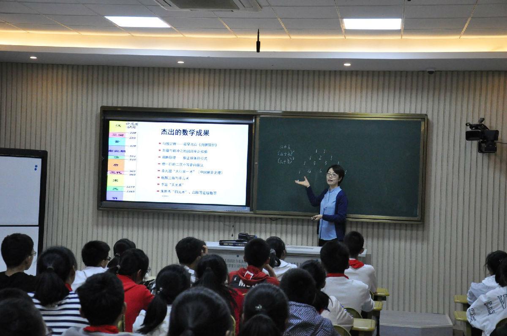
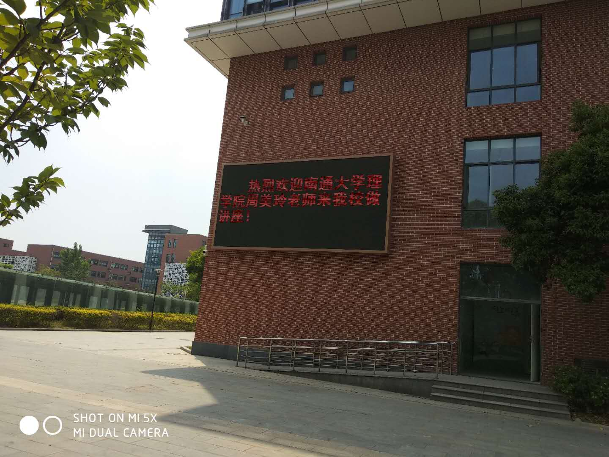

理学院周美玲老师赴崇川学校中学部做讲座
录入员： 理学院 浏览次数： 235 发布日期： 2019-05-13
2019年5月9日下午，理学院数学系周美玲老师应邀赴崇川学校中学部“崇善大学堂”做讲座，讲座由崇川学校中学部校长吴琳主持。
周老师以《古数繁花——中国古典数学拾珍》为题，通过运用大量生动的图片和历史典籍，给崇川学校的师生们介绍了中国古代数学发展的概貌，主要包含中国古代数学的杰出贡献和成果、中国古代的计数方法和工具的发展、中国传统文化中蕴含的数学思想等内容，特别介绍了中国古代数学家运用算筹进行加减乘除运算的具体运演步骤和方法，使中学生们亲身体验到了中国古算的特点和魅力。中国古典数学源远流长又别具一格，与以古希腊数学为代表的西方数学体系形成鲜明的对比，周老师的讲座增进了中学生们以及中学的数学教师们对于中国古代数学的了解和兴趣，讲座内容丰富，富有哲理，师生们深受启发。


